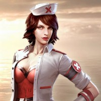
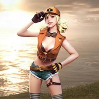
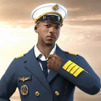

Voltar Pra Tela Inicial:
Home
Personagens:
Laura
Laura é uma agente especial das forças da autoridade. É especialista em tiro de precisão.
Habilidade Especial: precisão aumentada sempre que usar a mira.
Hayato
Shimada Hayato é um samurai de uma família tradicional japonesa. Ele carrega as tradições guerreiras em seus próprios genes.
Habilidade Especial:quanto menor a barra de de vida de Hayato estiver, mais dano ele causa em seus oponentes.
Caroline
Caroline é muito, muito rica e passa a vida cercada pelos seus fãs e por muitos guarda costas. É extremamente apegada ao seu pai e irmão e adora Cosplay.
Habilidade Especial: Caroline fica super rápida quando está empunhando uma escopeta.
Antonio
Antonio é orfão. Desde criança que aprendeu a sobreviver sozinho, criando seu primeiro gangue com apenas 7 anos. Ele é muito corajoso e nunca diz não a um desafio, mesmo correndo perigo.
Habilidade Especial: Antonio inicia cada partida com mais HP que os outros personagens
Moco
Moco é uma hacker capaz de quebrar barreiras de segurança de qualquer sistema informático e desaparecer sem deixar pistas. Isso a tornou bem conhecida no submundo.
Habilidade Especial: Moco consegue identificar inimigos no mapa sempre que atirar neles. Além disso, seu time também consegue ver esse sinal. Dura pouco tempo, por isso aproveite.
Rafael
Rafael é um mercenário, extremamente eficaz. É parecido com um certo agente e tal como ele, especialista em ataques silenciosos.
Wukong
Pouco se sabe sobre a origem do misterioso Rei Macaco tirando sua habilidade na luta contra o mal. Ele é uma personagem mística mas vulnerável aos mesmos perigos que os humanos.
Habilidade Especial: Wukong consegue transformar-se em moita, camuflando-se. Depois de usar esse poder , no nível 1, ele precisa de 300 segundos para poder usar de novo.
Maxim
Maxim compete regularmente em concursos de quem come mais. É um gamer bem humorado e sorridente, que adora fazer stream enquanto entra em batalhas com jogadores de todo o mundo.
Habilidade Especial: Maxim é o mais rápido a usar kits médicos e a consumir cogumelos.
Paloma
Uma traficante de armamento pesado, Paloma é tão bonita como mortífera. Uma antiga modelo que todas as garotas idolatravam virou especialista de venda de armas. Se há negócio sujo, Paloma está lá para pegar o lucro.
Habilidade Especial: graças a seus contatos Paloma consegue carregar mais munições AR sem ocupar espaço no inventário.
Miguel
Um especialista do Batalhão de Operações Policiais, Miguel é um PM letal, altamente treinado. Ele e seus camaradas do batalhão eliminaram ou prenderam milhares de criminosos, mas algo correu mal.
Habilidade Especial: Miguel enche a barra de EP sempre que consegue uma Kill.
Nikita
Nikita era guarda-costas profissional de alguns VIPS. Desde criança que ela sabe atirar com diferentes armas, chegando a ser campeã de tiro olímpico.
Habilidade Especial: é a mais rápida a recarregar qualquer submetralhadora
Kelly
O verdadeiro nome de Kelly é Shimada Kiriko. Ela é uma adolescente, ainda estudante. É uma atleta de elite, sempre treinando na pista de atletismo ou na academia.
Habilidade Especial: Kelly é a personagem com o sprint mais rápido de Free Fire. Ela pode usar esse poder para ultrapassar inimigos, pegar loot ou escapar de perigos
Kla
Um experiente lutador de Muay Thay, Kla é um solitário, que desapareceu durante anos até surgir de novo. Sua única motivação é a vingança, em especial contra os Zé Carrinho.
Habilidade Especial: Kla é o personagem que mais dano causa com os punhos. Essencial para os minutos iniciais de jogo.
Olivia

Enfermeira de profissão, Olivia é especialista em cuidar dos outros. É uma personagem indicada para os modos em Dupla ou Squad, pois consegue curar rapidamente e eficazmente os colegas de time. Em modo solo não há grande vantagem.
Misha

Misha é especialista em corridas. Corajosa, ela adora velocidade e ama deixar todos os seus oponentes comendo poeira.
Habilidade Especial: usar super turbo em todos os veículos
Ford

Ford foi marinheiro. A vida dura no mar aumentou a sua resistência e a sua vontade de sobreviver. É o personagem com mais segredos de Free Fire.
Habilidade Especial: Ford não sofre tanto dano dentro da zona radioativa como os outros personagens
Andrew
Um ex-policial, Andrew passou grande parte da sua vida perseguindo e eliminando criminosos. Devido à sua experiência, ele se tornou um especialista em sobrevivência e combate armado. Andrew é extremamente resistente a ferimentos.
Habilidade Especial: os coletes à prova de bala resistem a mais dano com Andrew, protegendo o jogador por mais tempo
Adam e Eve
Estes são os dois personagens iniciais de Free Fire. Não possuem habilidades especiais, mas você pode usá-los sem gastar moedas. É possível personalizar os personagens usando skins.